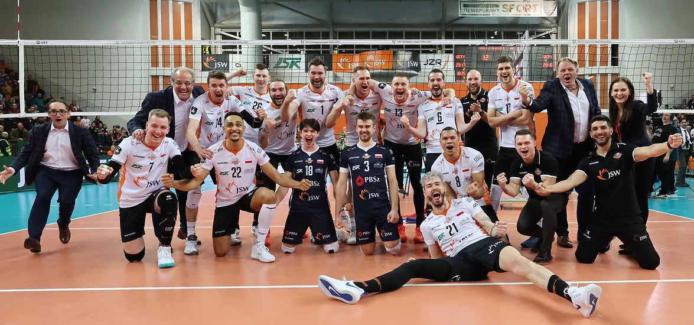

Najlepsze drużyny Polski
To jest interesujące
Najlepsze drużyny w Polsce, doskonale zdajemy sobie sprawę, że wszystkie nasze osiągnięcia zawdzięczamy utalentowanym i zdyscyplinowanym zawodnikom. Czytaj dalej, aby dowiedzieć się wszystkiego o członkach zespołu, którzy pracują dzień i noc, aby dotrzeć do finału. Są naprawdę godni nagród, które otrzymali.
Developres Bella Dolina Rzeszów
TAURON Liga
Developres Rzeszów to czołowy żeński klub siatkarski z Rzeszowa, założony w 2012 roku. Drużyna szybko stała się jedną z najlepszych w polskiej lidze, zdobywając czołowe miejsca w mistrzostwach i Pucharze Polski. Klub jest znany z dynamicznej gry i aktywnego udziału w rozwoju żeńskiej siatkówki.
Link
ZAKSA Kędzierzyn-Kozle
PlusLiga
Zaksa Kędzierzyn-Koźle to jeden z najlepszych klubów siatkarskich w Polsce. Drużyna wielokrotnie zdobywała mistrzostwo kraju i Puchar Polski, a także zwyciężyła w Lidze Mistrzów CEV. Klub jest znany ze swojego profesjonalizmu, utalentowanego składu oraz stałego wsparcia kibiców.
Link

Jastrzębski Węgiel
PlusLiga
Jastrzębski Węgiel to klub siatkarski z Jastrzębia-Zdroju, założony w 1949 roku. Klub wielokrotnie zdobywał mistrzostwo Polski i Puchar Polski. Jastrzębski Węgiel słynie ze stabilnej gry, oddanych fanów oraz udziału w międzynarodowych turniejach.
Link